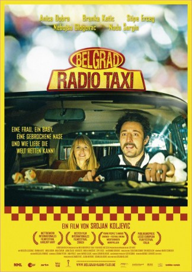

#4078 Belgrad Radio Taxi
 
 IMDB-Wertung: 6.9 / 10
IMDB-Wertung: 6.9 / 10  Metascore: 0
Metascore: 0 
Mitten auf der Belgrad-Brücke, die jeden Tag vor Verkehr überquillt, springt eine unbekannte Frau aus einem Taxi und stürzt sich anschließend die Brücke runter. Dem verdutzten Taxifahrer Gavrilo, der keine Chance hatte, einzuschreiten, hinterlässt sie auf dem Rücksitz einen Säugling. Lehrerin Anica, die sich darauf kurzentschlossen von ihrem Freund trennt und Apothekerin Biljana, bei der Anica ins Auto einsteigt, sind ebenfalls Zeugen des Selbstmordes. Mitten im Stau werden diese drei Menschen durch das Erlebnis auf schicksalhafte Weise miteinander verbunden...
Jahr: 2010
Dauer: 97 Minuten
FSK:
Land: Serbien Studio: Farbfilm-VerleihTonspuren:
Untertitel:
Auflösung: 720p (1280x720) Größe: 1873 MB
Genre: Drama, Komödie, Liebe
Regisseur: Srdjan Koljevic
Drehbuch: Paula Gosling
Soundtrack:
Darsteller:
 Anica Dobra als Anica
Anica Dobra als Anica Branka Katic als Biljana
Branka Katic als Biljana- Jasna Zalica als Jadranka
- Nikola Rakocevic als Marko
- Ljubomir Bandovic als Taksista
- Nikola Djuricko als Radio DJ
 Stipe Erceg als Vuk , uncredited
Stipe Erceg als Vuk , uncredited- Nebojsa Glogovac als Gavrilo
- Nada Sargin als Zena sa slomljenim nosem
- Vuk Kostic als Stefan
- Vojin Cetkovic als Goran
- Dubravka Kovjanic als Milica
- Rada Djuricin als Majka Dragica
- Miodrag Milovanov als Olac Bogdan
- Janos Tot als Doktor
- Sena Djorovic als Sankerka
- Nenad Nenadovic als Ginekolog
- Goran Radakovic als Komsija 1
- Ana Markovic als Prodavacica
- Mihailo Laptosevic als Policajac 2
- Sreten Mijovic als Policijski inspektor
- Milan Stojanovic als Dakon
- Bojan Dimitrijevic als Pijanac iz dvorista , uncredited
- Zorana Petrov als Medicinska sestra , uncredited
- Bojan Pivas als Dusan Lukic , uncredited
Datei: X:\2010(A-F)\Belgrad Radio Taxi (2010, FSK, 1280x720).mkv seit 19.07.2016
Festplatte: HD 2009(G-Z)-2010(A-F)
 Es gibt insgesamt 95 Filme in der Gruppe '2010(A-F)'
Es gibt insgesamt 95 Filme in der Gruppe '2010(A-F)'